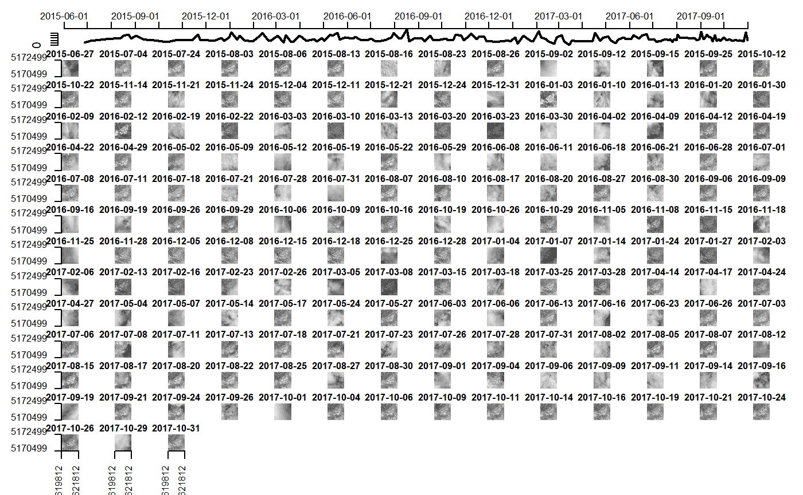

Get.RmdImport Libraries
Assess the complete history (all timeStamps) of one single pixel with the pixel_history function. If plot is TRUE the response is plotted otherwise the function will return a dataframe. One or multiple dates can be added allowing to subset the request temporally.
ptm<-proc.time()
coverage<-getCapability()[11]
coord_sys<-coverage_get_coordsys(coverage = coverage)
bands<-coverage_get_bands(coverage = coverage)
subset<-c("620812.02", "5171499.36")
pxl_hst_5 <- suppressMessages(pixel_history(coverage, coord_sys, bands, subset, date = NULL,plot=F))
pxl_hst_5 <- pxl_hst_5 %>% as.tibble## Warning: `as.tibble()` is deprecated, use `as_tibble()` (but mind the new semantics).
## This warning is displayed once per session.## # A tibble: 171 x 7
## Date AOT B02 B03 B04 B08 WVP
## <date> <dbl> <dbl> <dbl> <dbl> <dbl> <dbl>
## 1 2015-06-27 213 926 1061 946 2825 721
## 2 2015-07-04 213 660 1159 1375 3707 1205
## 3 2015-07-24 307 378 853 605 5419 1956
## 4 2015-08-03 148 252 696 245 6240 913
## 5 2015-08-06 159 256 632 284 5882 1508
## 6 2015-08-13 148 190 636 307 6147 1357
## 7 2015-08-16 201 8907 8005 7026 8111 568
## 8 2015-08-23 201 9438 9039 8783 8949 510
## 9 2015-08-26 136 235 623 281 5625 1034
## 10 2015-09-02 201 8569 8135 7654 8064 342
## # ... with 161 more rowsThe function geocoded_pixel_buffer() adds a buffer (in Pixel) around a central Pixel. The outputs are either (i) a List containing the Request (main URL+ WCPS request), the bounding box, the timestamps and the Values per layer or (ii) a plot of the “Pixel Chips” from each timestamp requested.
ptm<-proc.time()
coverage<-getCapability()[11]
bands<-coverage_get_bands(coverage = coverage)
subset<-c("620812.02", "5171499.36")
pxl_hst_5 <- suppressMessages(geocoded_pixel_buffer(coverage, band=bands[5], coords=subset,buffer=1000, date = NULL,plot = F))
str(pxl_hst_5)## List of 4
## $ Request : chr "http://10.8.244.147:8080/rasdaman/ows?SERVICE=WCS&VERSION=2.0.1&REQUEST=ProcessCoverages&QUERY=for%20c%20in%20%"| __truncated__
## $ BB : num [1:4] 619812 621812 5170499 5172499
## $ TimeStamps: Date[1:171], format: "2015-06-27" "2015-07-04" ...
## $ Values : int [1:171, 1:201, 1:201] 4084 3336 3703 2959 3007 2980 8874 7940 2986 8029 ...pxl_hst_5 <- suppressMessages(geocoded_pixel_buffer(coverage, band=bands[5], coords=subset,buffer=1000, date = NULL,plot = T))
passed2<-proc.time()-ptm
CubeRs’ image_from_coverage() function allows to extract a TIFF File from the Coverages. It offers paramters addressing the images in ways of selected bands, temporal acquisitions or spatial subsetting. Furthermore the res_eff parameter adds a possibility to resample the image.
ptm<-proc.time()
coverage<-getCapability()[11]
times <- coverage_get_timestamps(coverage = coverage)
coords<-c("620812.02", "5171499.36") %>% as.numeric
slice_E <- as.character(c(coords[1]-5000, coords[1]+5000))
slice_N <- as.character(c(coords[2]-5000, coords[2]+5000))
img <- image_from_coverage(coverage=coverage, slice_E, slice_N, times[1], bands = bands[4])
img[[1]]## class : RasterLayer
## dimensions : 1001, 1001, 1002001 (nrow, ncol, ncell)
## resolution : 9.99001, 9.99001 (x, y)
## extent : 615812, 625812, 5166499, 5176499 (xmin, xmax, ymin, ymax)
## crs : +init=epsg:32632 +proj=utm +zone=32 +datum=WGS84 +units=m +no_defs +ellps=WGS84 +towgs84=0,0,0
## source : memory
## names : layer
## values : 13, 10930 (min, max)Processing Time For the Single Functions:
## [1] "Time Elapsed Pixel History: 19.81"## [1] "Time Elapsed Pixel Buffer: 174.95"## [1] "Time Elapsed Image: 3.35000000000002"